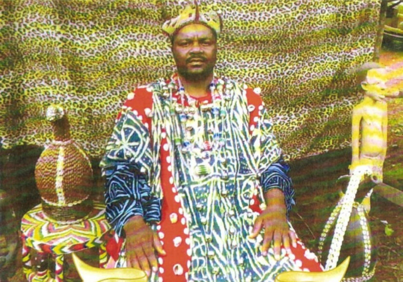
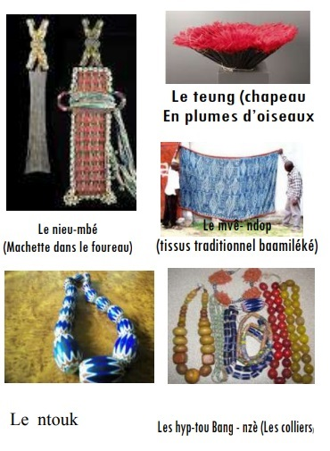
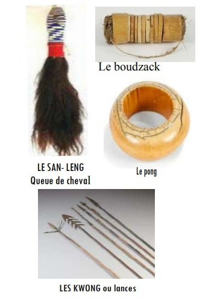
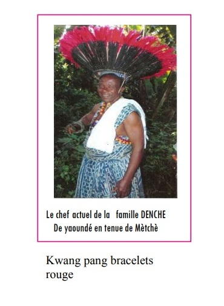

l'interview: Sa Majesté Tchouainkam Dada Théodore Nous Dit Tout Sur La Danse De Mètchièh
Selon un communiqué de Sa Majesté TCHOUAINKAM DADA Théodore, largement diffusé dans les réseaux sociaux, la danse du « Mèchiè » aura lieu le 2 novemnbre prochain à Batié. Batié-Infos s’est rapproché de lui pour en savoir plus sur ce rite de passage de l’âge adulte à celui du troisième âge. Dans l’entretien que nous publions dans cette édition, il nous dit tout sur ce que nous devons savoir à propos de la danse du « mètchiè » à Batié.
Qu’est-ce que le « Mètchièh »?
- Le mètchièh en langue matrimoniale Batié signifie grand lieu. C’est-à-dire le lieu où tout le monde se regroupe ou se rencontre pour un grand évènement Le « yia-mètchièh » est l’esplanade où peut se tenir un grand évènement Le « sem-mètchiè » quand à lui est le marché spacieux pour les grandes cérémonies. C’est sur cet espace que les membres du clan d’âge de cette année vont éxécuter la danse du mètchièh pour le compte de l’édition 2019 C’est la plus grande place du village.
Qu’est-ce que la danse de « Mètchièh »?
- La danse de « Mètchièh » est le rite de passage de l’âge adulte à celui du troisième âge. C’est-à-dire le départ traditionnel à la retraite.
Autrement dit: c’est une danse qui ouvre la voie pour le départ à la retraite traditionnelle après avoir effectué des actes de bravoures liés aux activités du clan d’âge Cla danse du « mètchiè » ne s’execute que lorsqu’on a tout accompli en remplissant toutes les obligations traditionnelles liées aux clans d’âge. Lorsque toutes ces exigences sont effectuées en bonne et due forme, les gens peuvent alors prétendre aller à la retraite paisiblement.
- Mais, aller à laretraite traditionnelle paisible et méritée située entre 60, 65 voire 70 ans et un peu plus C’est vrai qu’on peut danser le « mètchiiè » et toujoursparticiper volontairement aux œuvres de developpement de son village de manière généreuse, symbolique et avec fierté notamment pour la promoton et la perrenisation de la culture de son terroir natal.

Quels sont ceux qui dansent le « Mètchiè » ?
Ce sont les membres de la classe d’âge N°1 (hommes et femmes) les plus âgés qui oscillent entre 65 à 70 ans voir un peu plus.
Combien de classes d’âge existet-il à Batié ?
Il existe 13 classes d’âge classées par ordre décroissant. La classe d’âge N° 13 regroupant les plus jeunes jusqu’à la clansse d’âge N°1 constituée de ceux qui vont danser le « Mètchiè » cette année.
Quelle est l’organisation interne d’une classe d’âge?
Au sein d’une classe d’âge, il existe quatre groupes:
-Les « tah -ndi » constitués des princes ( les pères de la maison)
-Les « kua tah-ndi » : ( les adjoints aux pères de la maison). Pour être rangé dans le groupe des « kua tah- ndi » il faut nourrir le groupe
-Les « Deum’ ying » ; Ce sont les ainées en terme d’âge du groupe Les « Tchio ying »: Ce sont les moins âgés du « Ying »
-Les « guieugieu » sont les simples membres adhérants actifs mais qui n’ont pas de tâches particulières au sein du clan
Comment les clans sont-ils organisés au niveau du village ?
- Chaque classe d’âge porte un nom. On les nomme alternativement en 2 groupes : Les « gwui -pkom » et les « Pdja’a ».
Ceux qui ont dansé la dernière fois étaient les « gwui- pkom ». Ce sont les « Pdja’a » qui vont danser cette année pour sortir eux aussi du décompte.
Le prochain groupe qui va danser le « Mètchiè » après les « Pdja’a » de cette année sera les « gwui-Pkom » .
Ces derniers, après la danse de « mètchiè » de cette année vont devenir la classe d’âge N°1. Signalons cependant qu’on peut quitter de la classe d’âge « dja’a » pour la classe d’âge « gwui- kom » et vise versa surtout si on n’a pas un obstacle qui peut se faire bloquer (un grand frère ou une grande sœur).



Comment les classes d’âge préparentelles la danse du Mètchè ?
- Quand un groupe arrive au N°3, il commence à s’organiser pour préparer le« mètchè » sous les conseils et encadrement de leurs ainées les « PTA’PAP » c’est-à-dire leurs grands frères de même groupe qui ont dansé le « metchè » avant eux .
Exemple : les « pdja’a » qui vont danser cette année ont été encadrés et conseillés par les « pdja’a » qui ont dansé avant eux et qui sont de nos jours en retraite Lorsque le clan n°3 arrivent au N°1 , leurs grands frères (PTA’PAP) vont à la chefferie pour solliciter auprès du Chef Supérieur le travail que le clan N°1 va effectuer.
Dès que le clan N°1 est fixé sur le travail qu’il doit effectuer, il se met au travail avec l’aide des 7 classes d’âge inférieures Une fois ce travail effectué, ils doivent remettre les clés au Chef supérieur .Le « Ptah-pap » de ceux qui vont danser, demandent alors le tam-tam au Chef Supérieur (C’est-à-dire l’autorisation de danser). Le Chef Supérieur fixe alors la date de leur danse du « Mètchiè ».
A partir de cet instant, les choses désormais s’accélèrent. Une date est fixée pour le netoyage de la grande place du marché. Une autre date pour la danse du « Don mètchè » qui est une. sorte de repétition ou d’entrainement voire d’échauffement avant la grande danse sur l’esplanade du marché « sem mètchiè ».
Celle-ci se déroule au « sem-nwala » de la chefferie par les membres, les enfants et autres. Torses nus mais habillés de pagnes à partir des reins et non du NDOP (tissus traditionnel d’apparat)
Consécutivement, on nettoie, la grande place de la chefferie (Marché) où se déroulera la grande parade du « Mètchiè ».
Les classes d’âge sont renvoyés ensuite dans leurs quartiers respectifs pour préparer la nourriture du « Mètchiè ». Aidé en cela par leurs cadets de la classe d’âge N°2 c’est-à dire les « Po’o pap » (ceux qui vont danser le mètchè après eux).
C’est à ce moment que dans les quartiers, sont recrutés de nouveaux membres indécis . Ceux qui appartiennent à la même tranche d’âge, qui n’avaient pas jusqu’ici adhéré à leur classe d’âge mais qui souhaitent aussi danser le « mètchiè ». Ces ouvriers de la dernière minute payent leur droit de danser. On les appellent les « Neung- toum ». Les recettes que leur adhésion génère viennent renforcer la cagnote des préparatifs.
La veille de la grande danse du « Mètchiè » ,on allume un grand feu de bois sur la place du marché de la chefferie. A cette occasion une branche bien allumée est donnée aux cadets qui danseront après eux en guise de passage de témoin. Avec ce souhait adressé à haute voix: « Que ce feu ne s’éteigne pas dans vos mains » Ceci est comparabe à la retraite aux flambeaux avant le défilé des clans d âge le jour suivant
Toujours avant le jour J, les membres du clan qui va danser se retrouvent à une date convenue dans chaque quartier chez le « TahndI » de leur « Pntah » pour la cérémonie du port des chapeaux noir (Sètcheu) selon un rituel bien huilé;
Le « tah di» des « Pntah » commence par dire: . « Hacktchouè »c’est-à-dire littérallement « ouvre bouche » . ce qui signifie que la classe d’âge qui va danser doit payer avant que leurs ainées ne prennent la parole pour leur prodiguer les conseils de circonstance.
Ensuite le « tah di » des « Pntah » réclament le « poueuh-mètchè » (le sac de mètchiè). Un autre droit que le clan qui va danser doit payer;
...